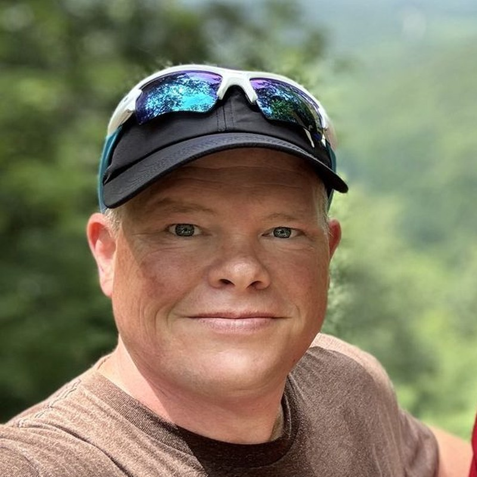
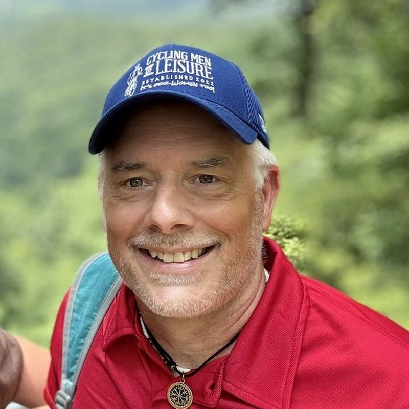

Cycling Men of Leisure
It's for women too
Everything you need to know about the podcast, the audience, and why leisure-minded cyclists are worth talking to.
Road Adventures of Cycling Men of Leisure — new episodes on Apple Podcasts, Spotify, YouTube, and every major podcast app.
"Cycling Men of Leisure — it's for women too." Not just a club or a team, but a leisure & life philosophy.
A laid-back cycling podcast of ride recaps, road stories, and the Listener Spotlight guessing game, built on the belief that miles matter less than the company you keep.
Cycling Men of Leisure is a cycling podcast and community built on a simple philosophy: ride far, ride slow enough to notice, and always leave time for a bourbon and a good story afterward. Founded in 2022 by Adam Baranski and Michael Sharp, the show has been downloaded more than 123,000 times in 183 countries, with a free Strava club connecting leisure-minded riders across the country. Despite the name, it's for women too.
Road Adventures of Cycling Men of Leisure has been downloaded more than 123,000 times worldwide — across 183 countries — since launching in 2022.
More than 94,000 US downloads span all 50 states and the District of Columbia — from RAGBRAI country to both coasts.
Five seasons of ride recaps, listener spotlights, and the stories that happen when the wheels stop turning.
Listeners tune in from every state — these are the ten with the biggest crowds.
| Rank | State | All-Time Downloads |
|---|---|---|
| 1 | California | 9,810 |
| 2 | Texas | 7,087 |
| 3 | Georgia | 6,584 |
| 4 | Florida | 5,770 |
| 5 | New York | 4,756 |
| 6 | Illinois | 4,345 |
| 7 | Michigan | 3,618 |
| 8 | Pennsylvania | 2,797 |
| 9 | Virginia | 2,710 |
| 10 | Ohio | 2,683 |
Source: Buzzsprout listener statistics, updated August 7, 2026.
CMOL isn't just a US audience — the show has been downloaded in 183 countries across every inhabited continent, led by the United Kingdom, Australia, and Canada — proof that a good bourbon and a slow ride translate in any language.
Listeners outside the US, spanning 182 other countries and territories.
🇬🇧 United Kingdom · 🇦🇺 Australia · 🇨🇦 Canada · 🇿🇦 South Africa · 🇮🇶 Iraq
Our listeners are recreational and endurance cyclists who ride week-long events like RAGBRAI and BRAG, invest in quality gear, and appreciate the finer things after the ride — a good bourbon, a good cigar, and a good story. They collect experiences, not Strava crowns.
Host-read ad spots woven naturally into the show — pre-roll, mid-roll, or a dedicated segment. Our hosts only talk about products they'd actually use on (or after) a ride.
Presenting sponsorship across a full season of episodes, with mentions on the website, social channels, and at in-person events during the riding season.
Cycling gear, libations, and leisure-adjacent products reviewed on the show and featured on our Reviews page — honest takes from riders who put in the miles.
Cycling Men of Leisure — it's for women too — began on a road in Iowa. Adam and Michael met mid-RAGBRAI in 2016, and the miles passed in conversation about cycling, investing, and life. Six years and many rides later, over a bourbon and a cigar after a day on the Bike Ride Across Georgia, a passing comment became a name, and CMOL was born: a Facebook page, a website, and a podcast built around a simple philosophy — ride far, ride slow enough to notice, and always leave time for a good pour and a good story afterward. Today the podcast, blog, and free Strava club connect leisure-minded riders across the country.

Pronounced buh‑RAN‑skee
One half of the original RAGBRAI meeting. Adam brings the ride-planning instincts and the conviction that the after-ride is as important as the ride itself.

The other half of that Iowa conversation. Michael keeps the stories rolling and the philosophy honest: miles matter less than the company you keep.
Logos, host headshots, ride photography, brand colors, usage guidance, and our sponsorship & partnership guide with current audience stats — everything in one bundle for articles, show notes, and sponsor decks.
Download the KitLogos and photos are free to use in editorial coverage — please credit Cycling Men of Leisure. Full usage guidelines are included in the kit.
Apple Podcasts →
Spotify →
YouTube (Audio-Only) →
RSS Feed →
For interviews, sponsorship rates, or anything else:
Or use the contact page — we answer every message, usually after the ride.